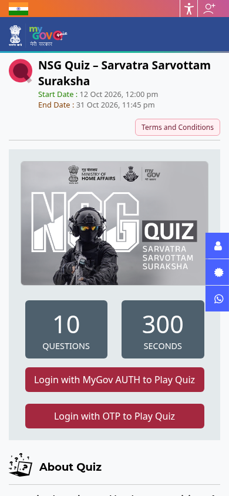

NSG Quiz on MyGov: cash prizes up to ₹10,000, ends 31 October
The National Security Guard (NSG) and MyGov list an online quiz on the NSG's history, role and achievements. It is open to all Indian citizens. Cash prizes run from ₹10,000 down to ₹1,000, and the quiz ends on 31 October 2026, 11:45 PM.
Official publisher logo hosted by its publisher. Official source. Independent guide, not affiliated or sponsored. Artwork and trademarks belong to their owners.
Prizes
- 1st winner: ₹10,000
- 2nd winner: ₹7,000
- 3rd winner: ₹5,000
- Next 5 participants: ₹1,000 consolation prize each
Quiz details
- Dates: 12 October 2026, 12:00 PM to 31 October 2026, 11:45 PM
- Up to 10 questions in 300 seconds. The timer starts when you click Play Quiz
- Topics: the NSG's history, role, mandate and achievements, plus India's national security and constitutional values
Rules to read
- Open to all Indian citizens. NSG and MyGov employees are not eligible
- One entry per person. Entries cannot be withdrawn once submitted
- Unfair means, impersonation or double participation make the entry void
- Proof of submission is not proof of receipt. The organisers' decision is final
How to play: step by step
Checked on the live MyGov quiz pages on 19 October 2026.
- Open the official quiz page: quiz.mygov.in/quiz/nsg-quiz-sarvatra-sarvottam-suraksha. The page shows 10 questions, 300 seconds and the end date (31 October 2026, 11:45 PM).
- Tap Login with MyGov AUTH to Play Quiz or Login with OTP to Play Quiz.
- New to MyGov: register with MyGov Auth or with DigiLocker (MeriPehchaan single sign-on). Already registered: enter your email or mobile number and tap Request OTP.
- Enter the OTP sent to your email/mobile to log in.
- Read the terms, fill your profile details if asked, then click Play Quiz - the 300-second timer starts immediately.
- Answer the 10 questions and submit. Winners are picked by automated random draw from the top scorers: ₹10,000 (1st), ₹7,000 (2nd), ₹5,000 (3rd), ₹1,000 consolation for the next 5.


Steps 5-6 happen inside your own login, so they are not shown as screenshots.
Video guides
We searched YouTube on 19 October 2026 for a step-by-step entry video for this quiz in English and in Malayalam. We could not verify one that covers this quiz and the current MyGov portal, so we are not linking any rather than risk an unrelated video.
We read the quiz page, prizes and the terms on 16 October 2026. We did not take the quiz.
Sources: NSG Quiz on MyGov. Checked 16 October 2026; play steps and video search re-checked 19 October 2026. This is an AiCoN explainer, not a government publication.